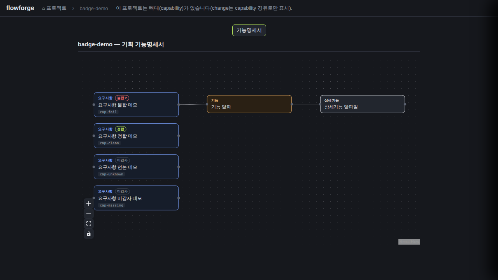
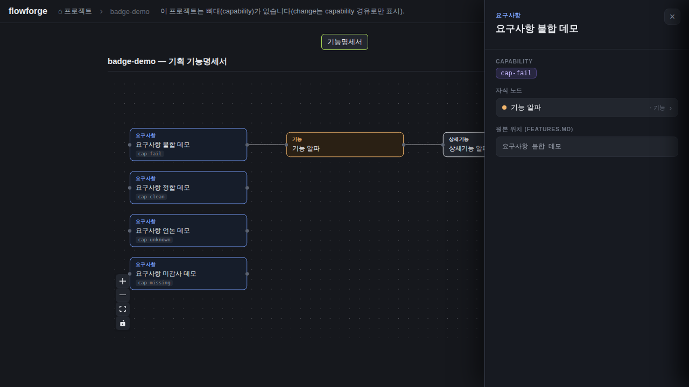
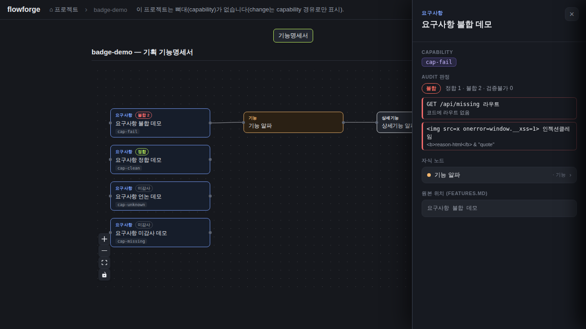

검증일: 2026-07-04T02:40:07+09:00 · 환경: server=jest 통합·단위(실행) / web=gstack 헤드리스(로컬 빌드 서빙 :8899, 픽스처 DOCS_ROOT) / android·ios=적용 불가 SKIP. 로컬 브링업: npm run build EXIT=0 → node server/dist/index.js · run: run-20260704-0240
PASS 9 · FAIL 0 · 검증 안 함 3 · SKIPPED 0
| Requirement | Scenario | Layer | 검증 수단 | 탐지 근거(basis) | 결과 | 증거 |
|---|---|---|---|---|---|---|
| audit items를 capability 단위로 집계해 제공한다 | FAIL 1건 이상 capability는 fail로 집계된다 | server | auditSummary.test.ts::(a) + docs.planning.test.ts::'fail·clean·unknown 3키 집계 맵 200' + 라이브 API 실측 | root=server/; scripts.test → jest(NODE_OPTIONS=--experimental-vm-modules); test files 26 suites(예: server/src/lib/__tests__/auditSummary.test.ts); devDeps jest@^29.7 | ✓ PASS | jest --ci --json 실측: 26 suites / 238 tests / 238 passed / 0 failed, EXIT=0 (파이프 없이 획득)
라이브 실측 GET /api/docs/badge-demo/audit-capabilities (200):
"cap-fail":{"status":"fail","pass":1,"fail":2,"unverifiable":0,"failClaims":[{"claim":"GET /api/missing 라우트","reason":"코드에 라우트 없음"},{"claim":"POST /api/other 라우트","reason":"메서드 불일치"}]} |
| audit items를 capability 단위로 집계해 제공한다 | FAIL 0건·PASS 있는 capability는 clean으로 집계된다 | server | auditSummary.test.ts::(b) 'PASS+UNVERIFIABLE만이면 clean' + 통합 cap-clean 단언 + 라이브 API | root=server/; scripts.test → jest(NODE_OPTIONS=--experimental-vm-modules); test files 26 suites(예: server/src/lib/__tests__/auditSummary.test.ts); devDeps jest@^29.7 | ✓ PASS | jest --ci --json 실측: 26 suites / 238 tests / 238 passed / 0 failed, EXIT=0 (파이프 없이 획득)
라이브 실측: "cap-clean":{"status":"clean","pass":1,"fail":0,"unverifiable":1,"failClaims":[]} — UNVERIFIABLE은 status를 깎지 않고 건수로만. |
| audit items를 capability 단위로 집계해 제공한다 | 검증가능 항목이 없는 capability는 unknown이다 | server | auditSummary.test.ts::(c) '전부 UNVERIFIABLE이면 unknown' + 통합 cap-unknown 단언 + 라이브 API | root=server/; scripts.test → jest(NODE_OPTIONS=--experimental-vm-modules); test files 26 suites(예: server/src/lib/__tests__/auditSummary.test.ts); devDeps jest@^29.7 | ✓ PASS | jest --ci --json 실측: 26 suites / 238 tests / 238 passed / 0 failed, EXIT=0 (파이프 없이 획득)
라이브 실측: "cap-unknown":{"status":"unknown","pass":0,"fail":0,"unverifiable":1} |
| audit items를 capability 단위로 집계해 제공한다 | audit.json 없음·깨짐은 빈 맵 폴백한다 | server | auditSummary.test.ts::(d)×3(파일없음/깨진 JSON/items 비배열) + docs.planning.test.ts::'audit.json 없는 프로젝트는 빈 맵 200' | root=server/; scripts.test → jest(NODE_OPTIONS=--experimental-vm-modules); test files 26 suites(예: server/src/lib/__tests__/auditSummary.test.ts); devDeps jest@^29.7 | ✓ PASS | jest --ci --json 실측: 26 suites / 238 tests / 238 passed / 0 failed, EXIT=0 (파이프 없이 획득)
(d) 파일 없음 → {} / 깨진 JSON('{not json!') → {} / items 비배열 → {} — throw 없음. 통합: proj2(audit.json 없음) → 200 {capabilities:{}} |
| audit items를 capability 단위로 집계해 제공한다 | audit.json 내부 경로는 신뢰하지 않는다 | server | docs.planning.test.ts 픽스처 scanRoot:'/etc' 무시 단언 + '경로 조작(..) 차단 → 404' + auditSummary.test.ts::(e) 필드 한정 소비 + 라이브 픽스처 scanRoot:'/etc/should-be-ignored' 무시 | root=server/; scripts.test → jest(NODE_OPTIONS=--experimental-vm-modules); test files 26 suites(예: server/src/lib/__tests__/auditSummary.test.ts); devDeps jest@^29.7 | ✓ PASS | jest --ci --json 실측: 26 suites / 238 tests / 238 passed / 0 failed, EXIT=0 (파이프 없이 획득) 통합 픽스처 audit.json에 scanRoot:"/etc" 포함 → 집계는 검증된 projDir 기준으로만 수행(응답 정상). GET /api/docs/..%2f..%2fetc/audit-capabilities → 404. (e) capability·verdict·claim·reason 외 필드/비객체 item 안전 스킵. |
| 요구사항 노드에 audit 배지를 표시한다 | 감사 데이터 있는 요구사항 노드에 판정 배지가 뜬다 | web | gstack 실픽셀+DOM: badge-demo 픽스처 — cap-fail '불합 2'(빨강), cap-clean '정합'(초록); DOM cls feature-tree-audit--fail/--clean | web/vite.config.ts + web/dist/index.html(빌드 산출물) + package.json react 의존; gstack READY | ✓ PASS |  |
| 요구사항 노드에 audit 배지를 표시한다 | 감사 데이터 없는 요구사항 노드는 미감사 배지가 뜬다 | web | gstack DOM: cap-missing(맵에 키 없음) → '미감사' 배지(feature-tree-audit--unknown); big-demo에서 맵 밖 60개 전부 미감사 | web/vite.config.ts + web/dist/index.html(빌드 산출물) + package.json react 의존; gstack READY | ✓ PASS | |
| 요구사항 노드에 audit 배지를 표시한다 | 기능·상세기능 노드에는 audit 배지가 없다 | web | gstack DOM 집계: badge-demo nodes=6 / .feature-tree-audit=4 — 배지 4개 전부 요구사항 노드 host, 기능·상세기능 노드 0개 | web/vite.config.ts + web/dist/index.html(빌드 산출물) + package.json react 의존; gstack READY | ✓ PASS | |
| 요구사항 노드에 audit 배지를 표시한다 | audit 데이터 로드 실패에도 그래프는 정상 렌더된다 | web | 런타임 재현: window.fetch 패치로 audit-capabilities만 reject(TypeError) 후 SPA 재진입 — nodes=6/badges=0 정상 렌더, 치명 콘솔 에러 0 | web/vite.config.ts + web/dist/index.html(빌드 산출물) + package.json react 의존; gstack READY | ✓ PASS |  |
| 상세 패널에 audit 상세를 노출한다 | 요구사항 노드 클릭 시 audit 섹션이 뜬다 | web | (매핑 없음 — 기능 미구현: grep -c 'audit' web/src/FeatureDetailPanel.tsx = 0건, task 4.1 미체크) | web/vite.config.ts + web/dist/index.html(빌드 산출물) + package.json react 의존; gstack READY | ? 검증 안 함 |  |
| 상세 패널에 audit 상세를 노출한다 | fail 상태면 FAIL claim 목록이 나열된다 | web | (매핑 없음 — 기능 미구현: FeatureDetailPanel.tsx에 failClaims 소비 코드 없음) | web/vite.config.ts + web/dist/index.html(빌드 산출물) + package.json react 의존; gstack READY | ? 검증 안 함 | |
| 상세 패널에 audit 상세를 노출한다 | clean·unknown이면 claim 목록은 생략된다 | web | (매핑 없음 — 기능 미구현: audit 섹션 자체가 없어 생략 규칙도 검증 불가) | web/vite.config.ts + web/dist/index.html(빌드 산출물) + package.json react 의존; gstack READY | ? 검증 안 함 | 선행 기능(audit 섹션) 미구현으로 파생 규칙 검증 불가 |
| Requirement | null | 빈값 | 잘못된타입 | 경계값 | 에러경로 | 동시성 | 대량 | 특수문자 | 판정 |
|---|---|---|---|---|---|---|---|---|---|
| audit items를 capability 단위로 집계해 제공한다 | ✓ | ✓ | ✓ | ✓ | ✓ | N/A | ✓ | ✓ | ✓ 충분 |
| 요구사항 노드에 audit 배지를 표시한다 | ✓ | ✓ | N/A | ✓ | ✓ | ✓ | ✓ | ✓ | ✓ 충분 |
| 상세 패널에 audit 상세를 노출한다 | ✗ | ✗ | ✗ | ✗ | ✗ | ✗ | ✗ | ✗ | ✗ 검증 불충분 |
✓=covered · N/A=해당없음(사유 hover) · ✗=missing. happy-path만이면 검증 불충분 → 최종 FAIL 차단.
| Layer | 상태 | ran | passed | failed | 근거/사유 |
|---|---|---|---|---|---|
| server | ✓ PASS | 5 | 5 | 0 | root=server/; scripts.test → jest(NODE_OPTIONS=--experimental-vm-modules); test files 26 suites(예: server/src/lib/__tests__/auditSummary.test.ts); devDeps jest@^29.7 |
| web | ✓ PASS | 4 | 4 | 0 | 요구사항3 시나리오 3건은 기능 미구현(검증 안 함)으로 실행 대상 아님 — 레이어 판정과 별도 집계 |
| android | – SKIPPED | 0 | 0 | 0 | 적용 불가 |
| ios | – SKIPPED | 0 | 0 | 0 | macOS 필요 |
✗ FAIL 차단 (예외 미검증(검증 불충분): 상세 패널에 audit 상세를 노출한다)
archiveGate.open = false (PASS일 때만 true). verify.json이 이 값을 archive 게이트에 전달.
{kind=link}
{kind=link}
{kind=link}